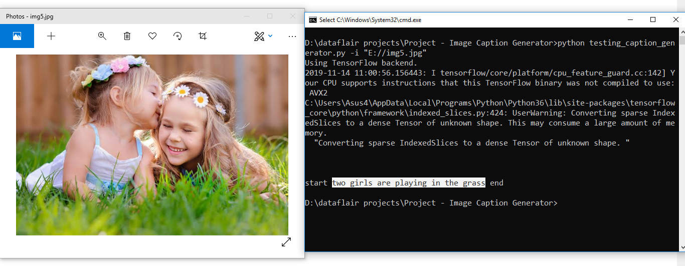
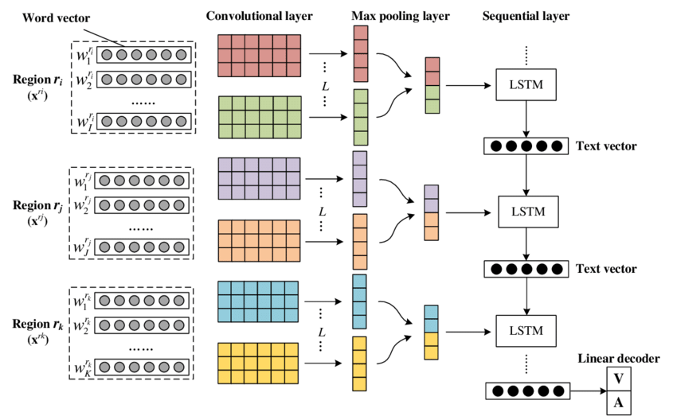
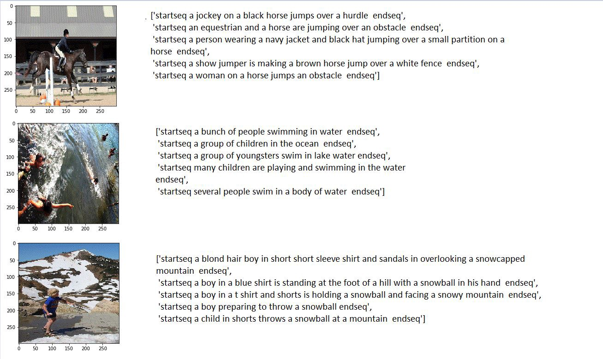
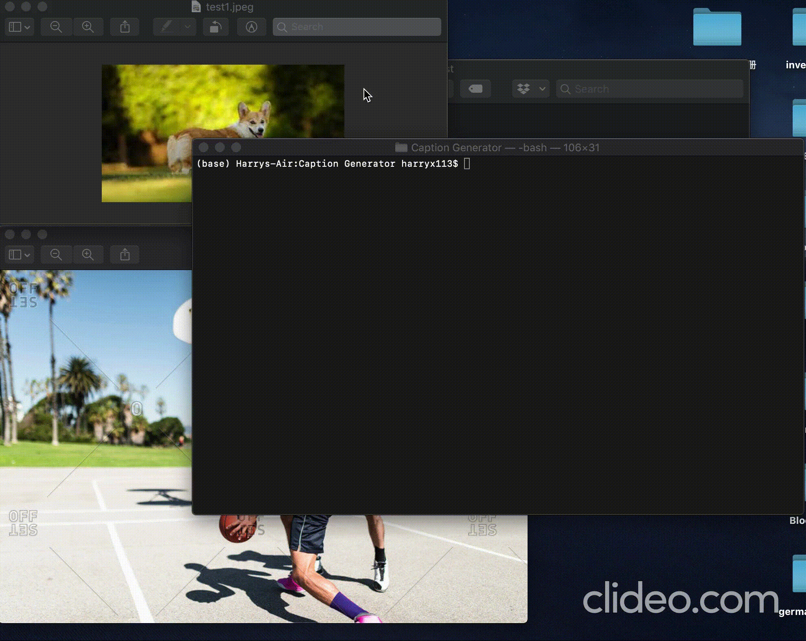
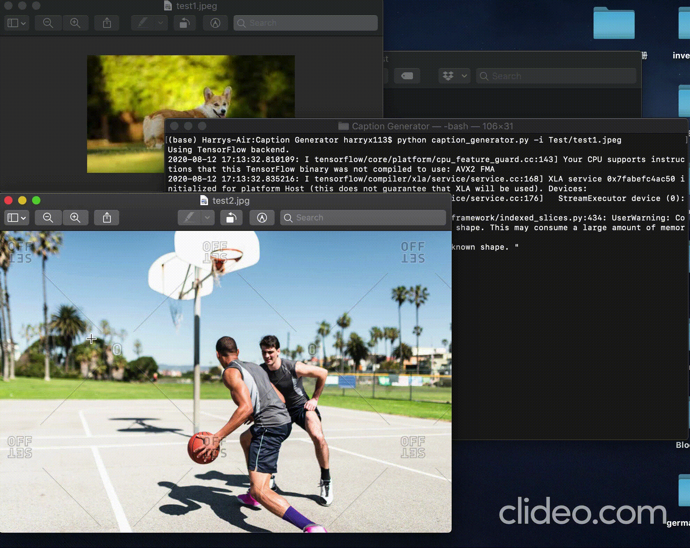

GitHub Repo

This caption generator can read an image, extract its features, and generate a caption accordingly.
The implication of this project is significant. Not only can people use it to automatically translate images to words, with a little fine-tuning,
e-commerce sites like Etsy, Wish and Ebay could help their sellers to create item titles and descriptions;
with text-to-voice technology, people with visual impairment can read an image just like everyone.

This project uses a CNN feature extraction + LSTM text generation architecture. For feature extraction, Xception, a pre-trained model similar to Inception V3,
is used and LSTM is used in parallel to process the text input from the dataset.

The Flickr_8K dataset contains more than 8000 images and respective captions.
The topics covered in this dataset include animals, sports, street views, human activities and so on.


Demos. To learn more about it and use it, you can visit the github repo here.